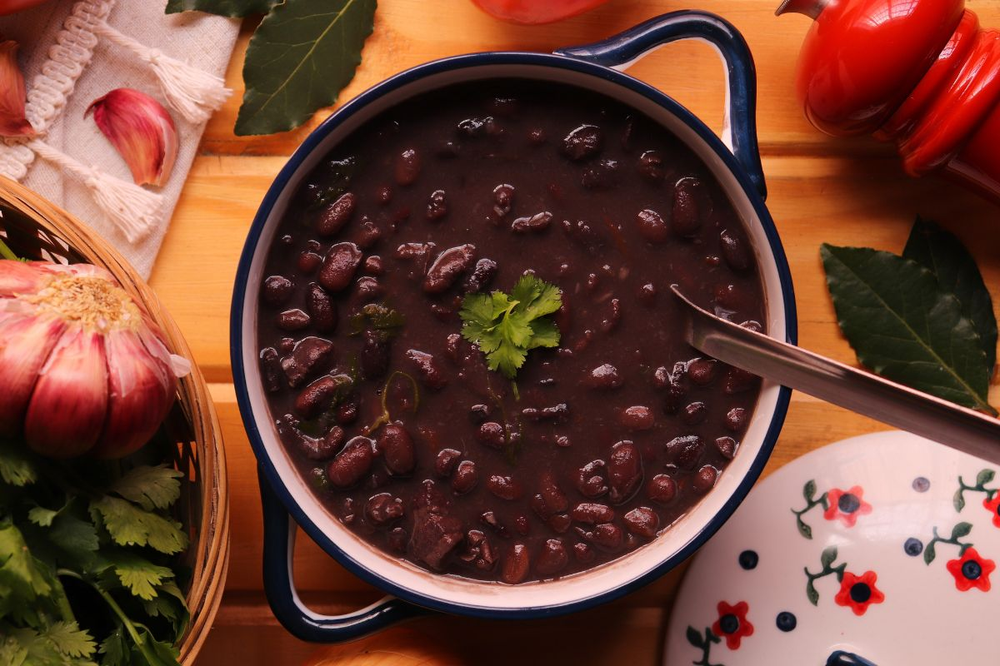

Feijão

Description
Feijão preto is one of my favourite dishes. A friend of mine showed it to me when we were sharing a flat in Vienna.
It's a Brazilian dish and quite traditional actually!
Ingredients
-
black beans
-
onions
-
garlic
-
spices (cumin, coriander)
steps
- dice the onion and the garlic
- fry in a pressure cooker, then add the spices
- add the beans and 2l of water
- cook for two days